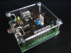
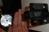

|  |
Frequently Asked Questions about Hardware
- How can I build a contact platform?
See docs and videos on hardware section at webpage: multimedia.
- Where can I buy a contact platform? Can I sell the one I built myself?
We don´t trade the contact platforms, instead we advice those who want to use this method to build their proper platform. If any person or company ever decide to produce them by the method we have taught or any other compatible method and decide to commercialize, an aware can be given to us so that we can divulge this service even though we are not responsible for the quality of the products.
- Why does the steel has to be warmed?
The steel of the contact platform will be submitted to a number of pressures, if warmed it will resist better and it will also have a better capacity to return to its initial position.
- Can we use photoelectric cells?
Yes. See docs on hardware section at webpage: multimedia.
- I have found a better manner to build the contact platform, where could I advertise it?
Please use the Forum.
Cronometer Chronopic
- Where can I buy Chronopic?
Go to webpage: Hardware store.
- Can I build a homemade or industrial Chronopic?
See docs and videos on hardware section at webpage: multimedia.
You can build Chronopic manually or industrially in any country.
- Can I sell Chronopic?
Yes, at the price you want. You need to follow the hardware license: Creative Commons. Attribution-Share Alike 2.5 Spain.
- Can I put an advertisement on your site as a Chronojump and/or Chronopic distributor?
Yes, please write an email to the address in this image:

- Can I connect more than one Chronopic to a computer?
Yes.
- One Chronopic is enough in order to capture from one or more devices (like contact platforms) if there's no contact in different devices at the same time. If you want to measure the contact time and the flight time on the gait, you will not be able to differentiate between both feet.
-
With two or more Chronopics you can capture using different channels. In the gait analysis, you can put a contact platform and a Chronopic for each foot, connecting both Chronopics to the computer. This feature is new in Chronojump 0.9.
- Why the need of a chronometer if any computer can cover this function?
The modern operative systems are multifunction, this mean that the computer need a certain quantity of time to develop each function in a way that seems to be executing all functions at the same time.
If the computer is in charge to receive the stimulus arrived from the contact platform, in certain occasions it may delay the events because it will be developing otherssubjects, this may cause problems of reliability due to the jumps of same length of time could have different measurements on different circumstance.
The output chronometer that we have built is special on receiving those events given on the contact platform, avoiding the reliability errors when registering the events.
Moreover Chronopic permits the use of Chronojump or its reduced version: Chronojump-mini to be used in any electronic display, assuring a good compatibility toward the future.
For more information, please read this article: "Proyecto Chronojump: Sistema de Medida de la Capacidad de Salto usando Software y Hardware Libres" (spanish).
|
 |